Bounding Stratified Bernoulli Impulses for Ray Marching Gaussian Process Implicit Surfaces
ACM Transactions on Graphics 45 (4), 1–15, 2026
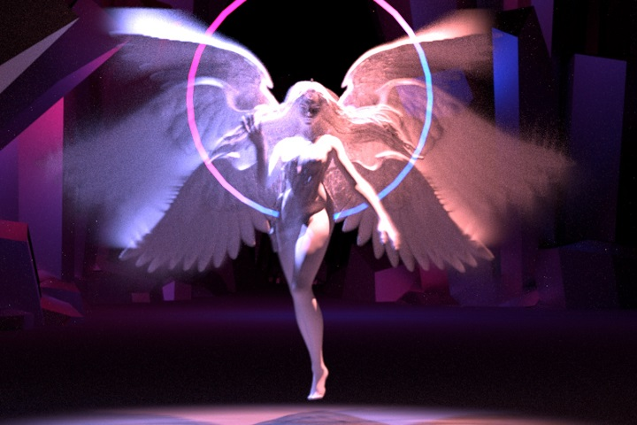
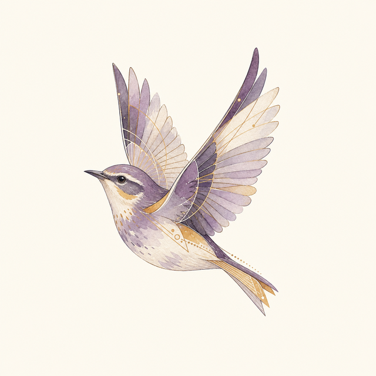
I am a Full Researcher (equivalent to Full Professor in the U.S. academic system) at Shandong University. I am a recipient of the Qilu Outstanding Young Scholar Award. Before joining Shandong University, I was a Postdoctoral Fellow at the University of California, Santa Barbara (2023–2025), and I interned at Meta Zurich in 2022. I received my Ph.D. from Shandong University, China (2017–2022).
Openings: I am always interested in hearing from curious and self-motivated graduate students. If your interests align with my research, please email me with your CV and a brief description of the research questions you would like to explore.
My research focuses on the intersection of artificial intelligence (AI) and photorealistic rendering, particularly on visual appearance modeling (as applied in the metaverse and digital human contexts). I am committed to unraveling the intricacies of why the real world appears as it does and how we can model interactions with light in an accurate and effective manner.
Two distinct rendering paradigms have emerged: one focused on studying optical phenomena and physical structures that influence appearance and building models that adhere to physical laws, and the other on integrating data-driven approaches—such as training neural networks on observational data—to enhance the accuracy and realism of digital representations. Ultimately, my goal is to combine these two approaches to recreate the subtle nuances of the real world within digital environments.
My current work addresses several key application areas in rendering, such as:
My research has been translated into practical rendering technologies across consumer devices, film production, and commercial rendering systems. Representative applications include:
These applications reflect my focus on bridging advanced rendering research with real-world production requirements, including visual quality, computational efficiency, hardware constraints, and practical deployment.
ACM Transactions on Graphics 45 (4), 1–15, 2026

ACM Transactions on Graphics 45 (4), 1–12, 2026
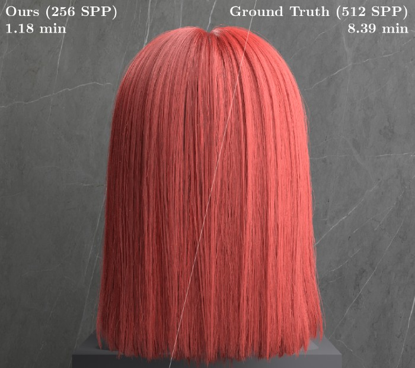
ACM Transactions on Graphics 45 (4), 1–17, 2026
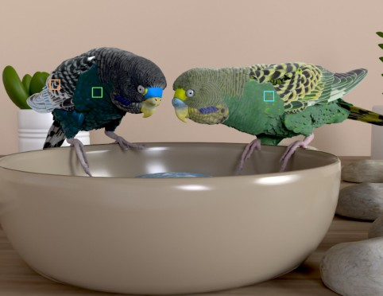
Computer-Aided Design, 104129, 2026
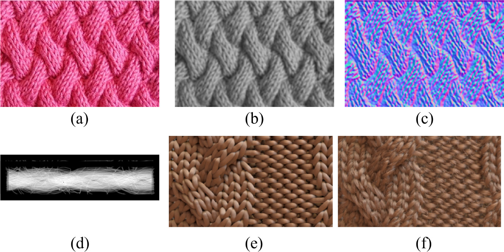
IEEE Transactions on Visualization and Computer Graphics, 2026
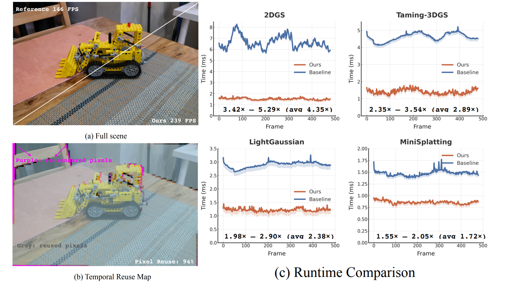
arXiv:2602.23754, 2026
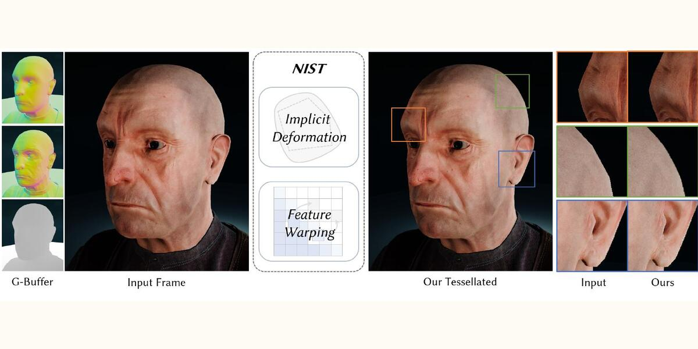
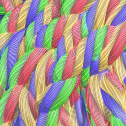
Computer Graphics Forum 44 (4), e70181, 2025
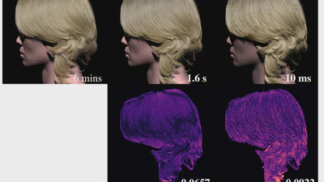
Computer Graphics Forum 44 (1), e15283, 2025
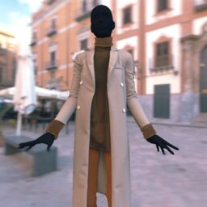
Computer Graphics Forum 44 (7), e70243, 2025

Computer Graphics Forum 44 (4), e70183, 2025
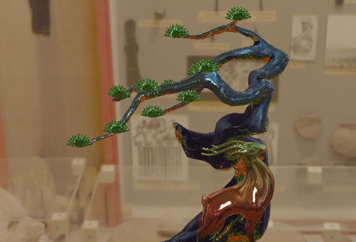
Computer Graphics Forum 44 (4), e70176, 2025

Graphical Models 141, 101301, 2025
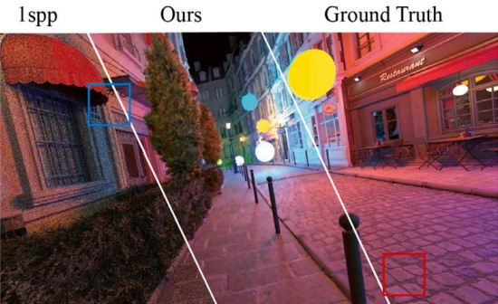
ACM SIGGRAPH 2024 (Conference Track)
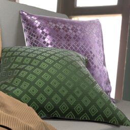
SIGGRAPH Asia 2024 Courses, 1–16, 2024
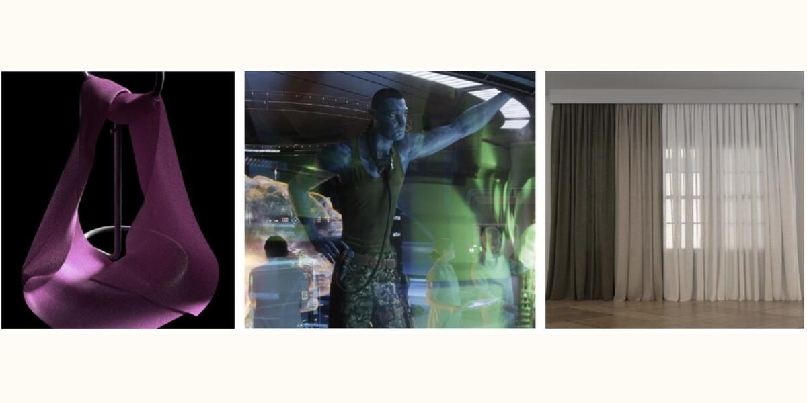
Computer Graphics Forum (Proceedings of Eurographics Symposium on Rendering 2023) Best Paper · Best Visual Effects
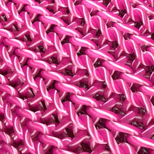
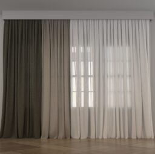
ACM Transactions on Graphics (Proceedings of SIGGRAPH 2022)
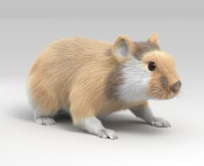
Computational Visual Media 8 (4), 535–552, 2022
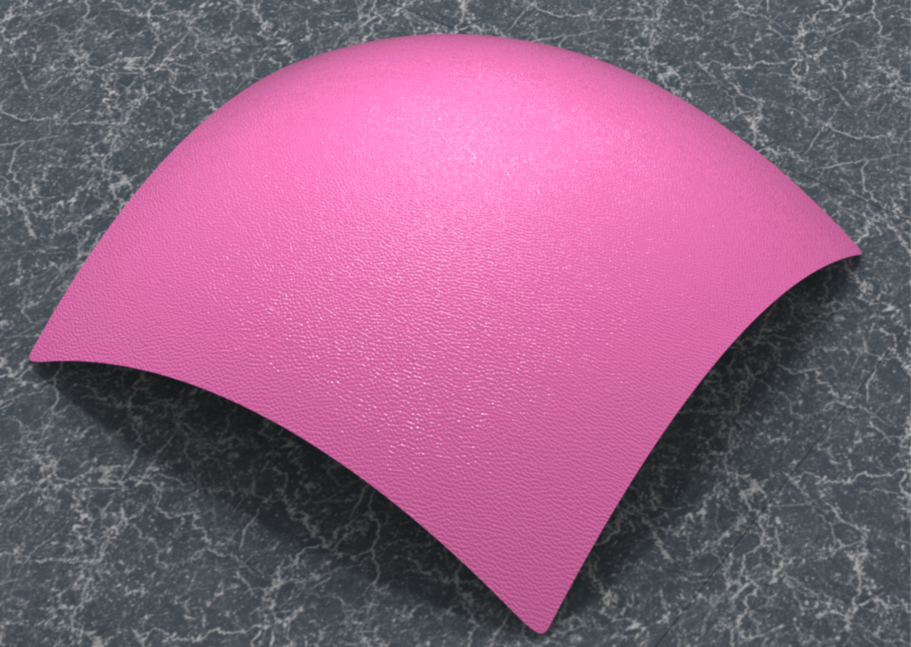
Computer Graphics Forum 41 (1), 495–506, 2022
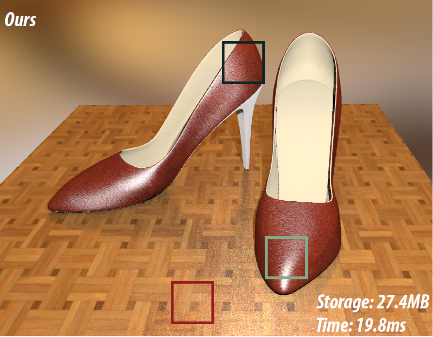
Journal of Software 33 (1), 356–376, 2022
ACM Transactions on Graphics 40 (4), 57:1–57:12, 2021
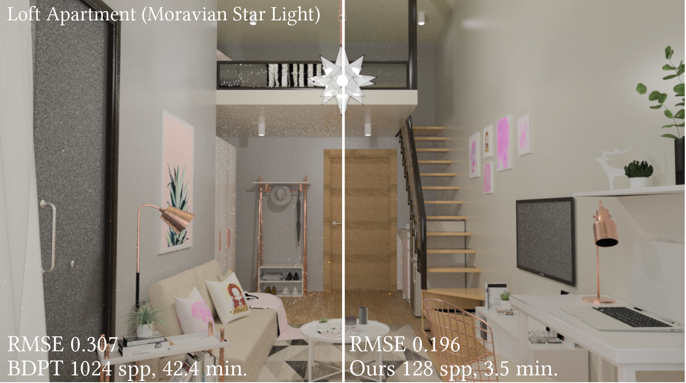
Computer Graphics Forum 38 (7), 745–754, 2019
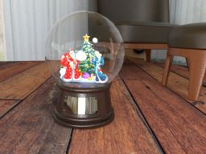